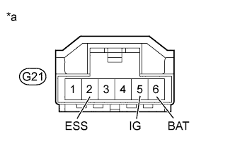

DTC C1784/84 Steering Sensor Signal Malfunction |
| DTC Code | DTC Detection Condition | Trouble Area |
| C1784/84 | A steering angle sensor signal malfunction is detected, or a steering angle sensor power source malfunction signal is detected for 5 seconds or more. |
|
| 1.CHECK DTC |
Clear the DTCs (Click here).
Perform a road test.
Check if DTCs C1784/84 and U0126/71 are output (Click here).
| Condition | Proceed to |
| DTC is not output or only DTC 1784/84 is output | A |
| DTCs 1784/84 and U0126/71 are output | B |
|
| ||||
| A | |
| 2.CHECK DTC (VEHICLE STABILITY CONTROL SYSTEM) |
Check for steering angle sensor malfunction DTCs (Click here).
| Condition | Proceed to |
| DTC is not output | A |
| DTC is output | B |
|
| ||||
| A | |
| 3.CHECK TERMINAL VOLTAGE AND RESISTANCE (IG, BAT, ESS) |
Disconnect the G21 steering angle sensor connector.
|  |
Measure the voltage and resistance according to the value(s) in the table below.
| Tester Connection | Switch Condition | Specified Condition |
| G21-5 (IG) - Body ground | Engine switch on (IG) | 11 to 14 V |
| G21-6 (BAT) - Body ground | Always | 11 to 14 V |
| Tester Connection | Condition | Specified Condition |
| G21-2 (ESS) - Body ground | Always | Below 1 Ω |
| *a | Front view of wire harness connector (to Steering Angle Sensor) |
Check that the steering angle sensor connector is not deformed or corroded.
|
| ||||
| OK | |
| 4.READ VALUE USING INTELLIGENT TESTER (STEERING ANGLE) |
Turn the engine switch off.
Connect the intelligent tester to the DLC3.
Turn the engine switch on (IG).
Turn the intelligent tester on.
Enter the following menus: Chassis / Air suspension / Data List.
| Tester Display | Measurement Item/Range | Normal Condition | Diagnostic Note |
| Steering Angle | Steering angle/ Min.: -49152.0 deg Max.: 49150.5 deg | Actual steering angle Steering wheel turned left: reading increases Steering wheel turned right: reading decreases | - |
|
| ||||
| OK | ||
| ||